How-to guide
Filter Forge builds loot filters for Project Diablo 2. Simple mode is for picking how items look without touching filter code. Advanced mode is a full editor for every rule. Switch any time with Simple | Advanced at the top.
Getting started
Install and update
- Download PD2-Filter-Forge_x.y.z_x64-setup.exe from the download page and run it.
- If Windows shows “Windows protected your PC”, click More info → Run anyway. The app isn't code-signed, which is why Windows asks.
- Filter Forge checks for updates when it starts. When a new version is out, a banner appears: click Update to x.y.z and it closes, updates and reopens by itself. You can also check any time in Settings → Version, or from the start screen.
Open or start a filter
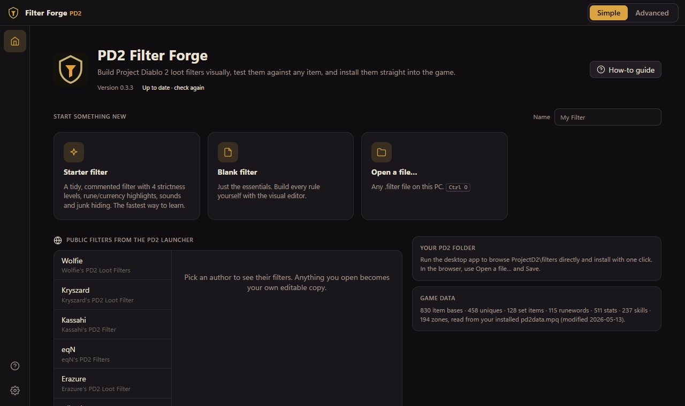
- Starter filter — a commented filter with strictness levels, runes, currency and junk hiding. The easiest place to begin.
- Blank filter — nothing but the essentials.
- Open a file… — any
.filteron your PC. Filters in yourProjectD2\filtersfolder are listed too. - Public filters — every filter from the PD2 launcher's list. Opening one gives you your own copy; the original keeps updating in the launcher.
Put it in the game
Click Install to PD2 (top right). The filter is saved into ProjectD2\filters\local (with a .bak of the previous version). In the PD2 launcher pick it under Local, then in game choose a strictness level in Options → PD2 Options → Filter Level.
Simple mode
Simple mode has four tabs across the top: Items, Mystery drops, Loot preview and Shop hunting.
Change how an item looks
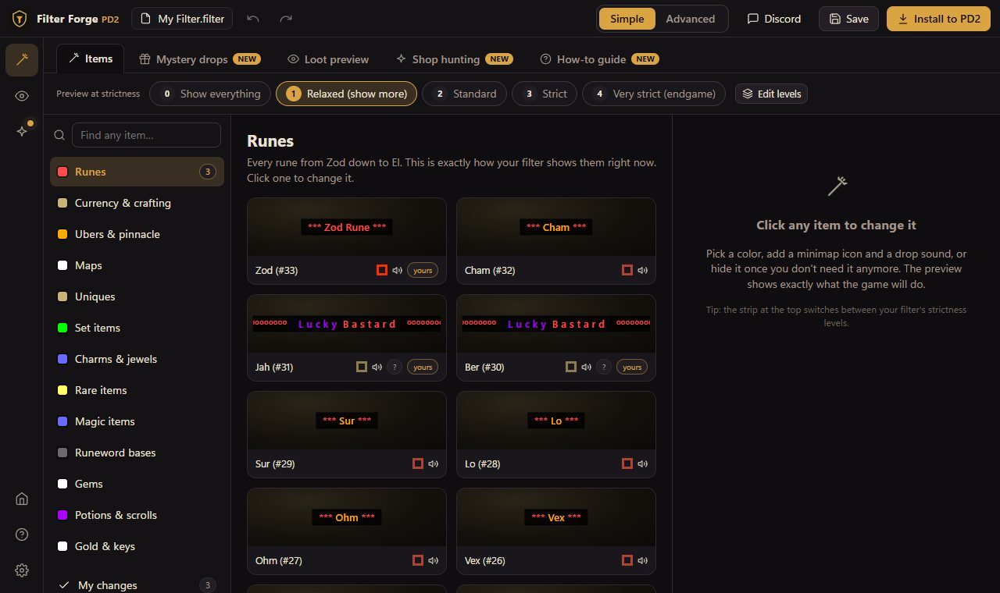
- Pick a category on the left (Runes, Currency, Uniques…) or type any item name in Find any item.
- Every tile shows exactly how your filter draws that item right now. Click one.
- On the right, choose:
- On the ground — show it, hide it on stricter levels, or hide it.
- Text color, stars (
*** Name ***), text before or after the name (ooo Name ooo), or a custom name. - For a weapon or armor base found with Find any item, Only white & grey ones limits the choice to normal and superior items (runeword bases), leaving magic, rare, set and unique versions alone.
- Drop alert — a minimap icon (size and color) and a drop sound. Click a sound to hear it.
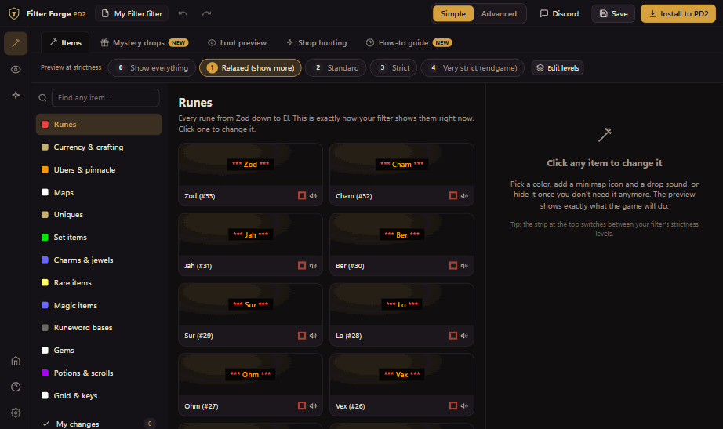
Your choices are saved as a clearly labelled block at the top of the filter, so they win over the rest of it. More specific choices win over broader ones (Large gold piles over Gold), whatever order you made them in. Reset puts an item back the way the filter had it.
Strictness levels
The strip under the tabs switches the preview between your filter's strictness levels, the same ones players choose in game. Edit levels renames, adds or removes them. The small row of eyes on each item shows at which levels it's visible and alerts.
Mystery drops
A mystery hides what dropped behind a banner of your own — like ººº L u c k y B a s t a r d ººº — with its own minimap icon and sound. You find out what it is when you pick it up.
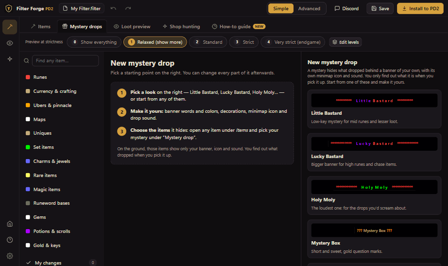
- Open the Mystery drops tab and pick a starting look.
- Change the banner words and colors, the decoration on both sides, the icon and the sound. A counter warns you before PD2's 56-character limit.
- Choose when the mystery ends: always when picked up, and optionally when dropped in town or when the item is already identified.
- To add items, open any item under Items and pick your mystery under Mystery drop. The mystery's own page lists every item behind it.
Real names on unidentified items
In Items → Uniques or Set items, turn on Show real names on unidentified items. A dropped Shako then shows as “Harlequin Crest” before you identify it. Items that could be several uniques (rings, amulets…) keep their name, and their tooltip lists what they could be.
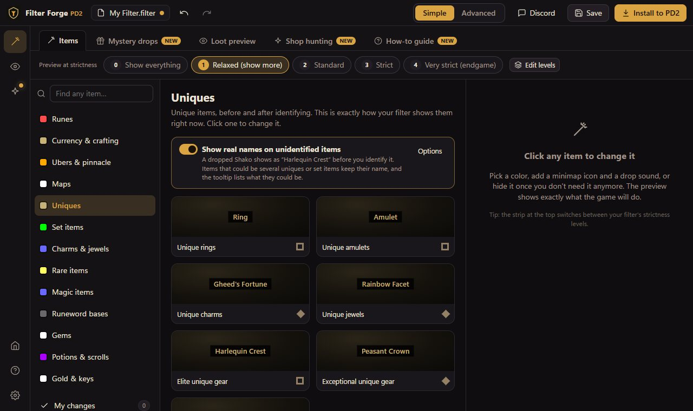
Loot preview
A pile of typical drops drawn by your filter, with their minimap icons and alerts, at the strictness level you choose.
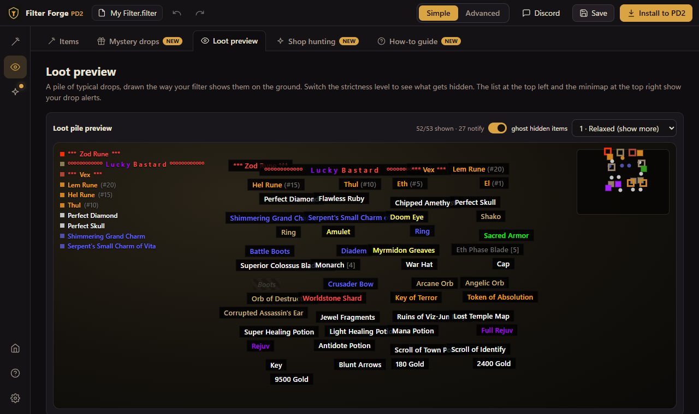
Shop hunting
Tell the filter what you're hunting for in vendor windows. Matching items get a label you can't miss when you hover them. It's in both modes (the sparkle icon in Advanced mode).
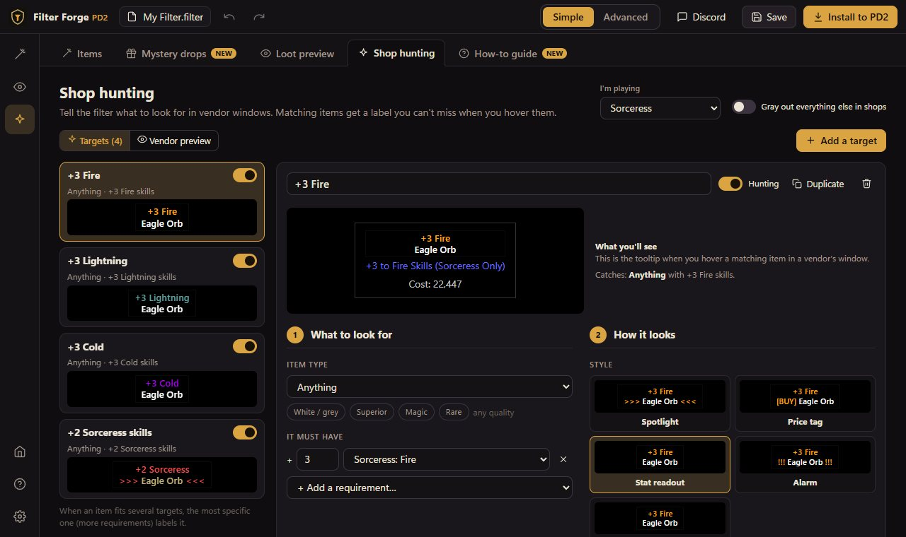
- Choose your class under I'm playing.
- Click Add a target and pick a suggestion — +3 to a skill tree, +2 class skills, 4-socket bases, fast boots… — or start from scratch.
- In the editor:
- 1. What to look for — the item type, quality, and requirements such as a skill tree, class skills, one skill, a stat (FCR, IAS, run speed, resists…) or sockets.
- 2. How it looks — Spotlight, Price tag, Stat readout, Alarm or just a color, the colors, a line with the values you're hunting, a note, and the price color.
- Vendor preview shows a mock shop stocked with your targets. Hover any item to see its tooltip.
- Gray out everything else in shops makes your targets stand out even more.
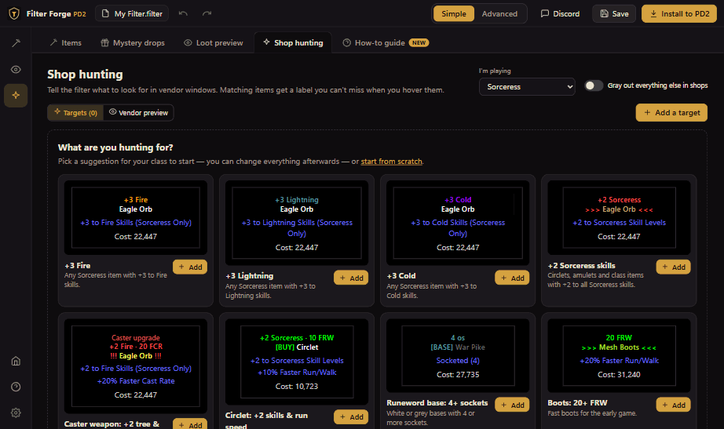
When an item fits several targets, the most specific one labels it.
Advanced mode
The left rail holds the tools: Rules, Test Lab, Levels, Aliases, Formulas & Features, Problems, Codex, Source text and Shop hunting.
Rules and the inspector
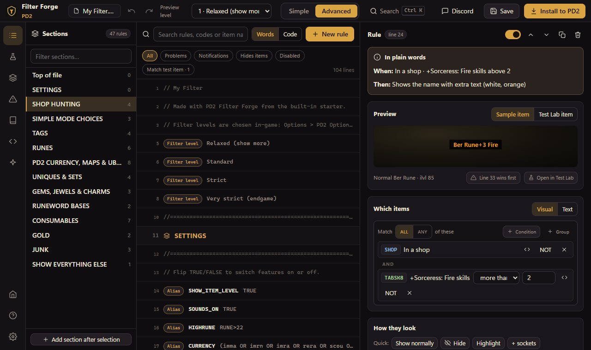
- The rule list shows every rule with a live preview, grouped by the sections in your file. Search by text, code or item name (“shako” finds
uaprules), and filter to problems, notifications or hides. - Words/Code switches between plain-English rules and filter code.
- Select a rule to edit it in the inspector: a plain-English summary, a visual condition builder (ALL/ANY groups, NOT, ranges), and an output editor with colors, icons, sounds, tiers and %CONTINUE%.
- New rule opens a wizard: highlight items, hide junk from a level, add info tags, or start blank.
Test Lab
Build any item — base, unique, set, runeword, quality, ethereal, sockets, item level, stats and skills — and set class, level, difficulty, zone, location and strictness. The Lab shows the exact rules that match, the final label and tooltip, and the notification.
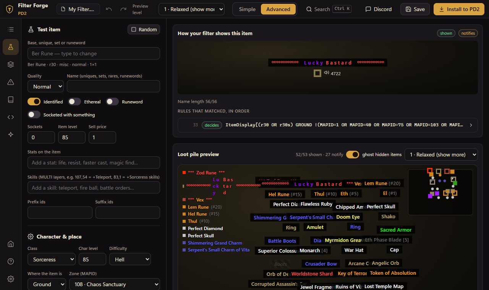
Problems
PD2 never reports filter mistakes; it quietly drops or reinterprets what it doesn't understand. The Problems tab finds those, explains what PD2 actually does, and offers fixes.
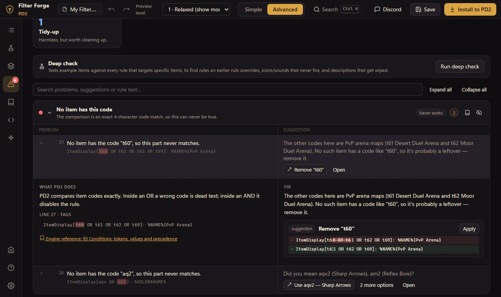
- Each row shows the problem on the left and the suggestion on the right. Click it for details: what PD2 does with that exact text, a before/after of each fix, and a link to the engine reference.
- Fixes are marked certain (same meaning, written so PD2 reads it) or suggestion (a guess at what you meant). Fix all only applies certain fixes.
- No item has this code: besides the suggestions, click Other code… and type the code (or item name) you meant. It's checked as you type, and Apply only unlocks when the code is real and doesn't cause a new problem, such as a duplicate of another rule or a code that doesn't fit the others in the list.
- Copy for AI makes a text report of every problem and fix, ready to paste into an AI assistant.
- Ask on Discord posts in the Roofoo Discord's #filter-help with your filter and the report attached.
Levels, Aliases, Formulas & Features
Manage strictness levels, aliases (named snippets you reuse in rules) and formulas (calculated values), and switch on filter-wide features like real names for unidentified items.
Codex
Every condition and output keyword, item code, stat, skill, zone, color and sound — with how often each is used in your filter. The Engine reference explains exactly how PD2 reads filters.
Discord
Discord (top bar) prepares a post for the Roofoo Discord: Ask for help (#filter-help) or Share your filter (#share-your-filter). The app fills in the channel's prompt with what it already knows. Then:
- Copy the post.
- Save the files to attach (your filter, plus the problems report for help posts).
- Open the channel, paste, drag the files in, and send. It's posted from your own account.
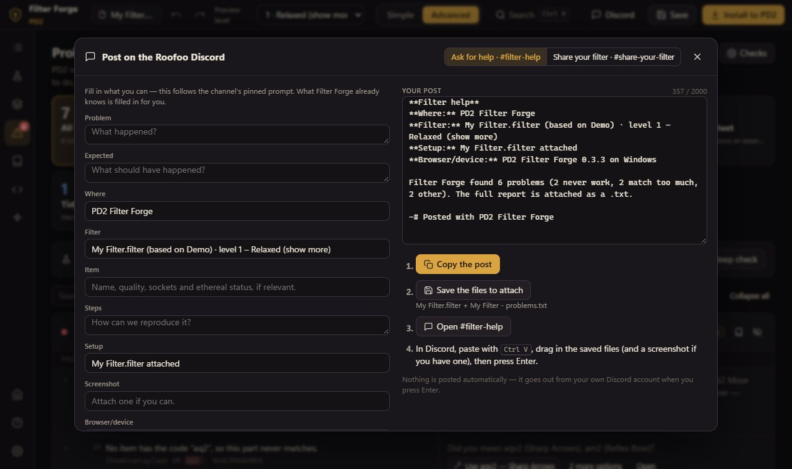
Settings, themes and shortcuts
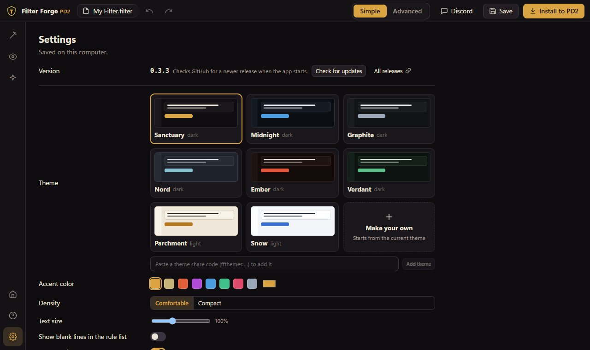
- Themes — eight built in. Make your own from five colors; your themes can be edited, deleted, and shared as a code others paste into their copy.
- Accent color, density and text size.
- Save encoding — UTF-8, which PD2 reads since Season 13.
| Shortcut | Does |
|---|---|
| Mouse back / forward buttons, Alt+← / Alt+→ | Previous / next screen |
| Ctrl+K | Search everything and run commands |
| Ctrl+S | Save |
| Ctrl+Z / Ctrl+Y | Undo / redo |
| Alt+1 … Alt+7 | Jump between the tools |
Troubleshooting
- My filter doesn't show in game. In the PD2 launcher, choose your filter under Local, then pick a strictness level in game.
- An item shows “hidden” but I want to see it. Open it (Simple: click the tile; Advanced: the rule) and choose Show it. Strictness level 0 always shows everything.
- Windows won't run the installer. Click More info → Run anyway on the SmartScreen warning.
- The “Could be” list doesn't appear. A later rule in your filter replaces the tooltip for those items; the panel tells you when that's the case.
- Something else? Use Discord → Ask for help, or Problems → Copy for AI.